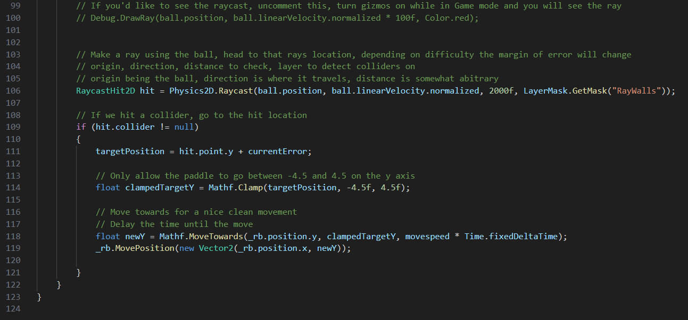

My Experience With Comet Contacts
Comet Contacts was my first team-based web dev experience. I did it over the Summer for a "Proccesses for Object Oriented Software Development, and it taught me a lot about working on a team as well as some basic tools.
This was a LAMP stack site, so the structure is fairly simple and this made it so much easier to learn the basic tools of web dev.
I worked as the lead front-end dev for the project and was in charge of everything related to design. I came up with the name, I made the color pallette, I decided the entire look of the site. As seen above
We made the site in around two weeks and presented it live in class where it was recieved well for the pagination and overall design.
Our second project ScreenBuddy was overall more impressive, but I enjoyed the simplicity of this project and I learned a lot of basics. When I learn something I like to really get used to the basics before moving on to higher level skills, this project helped with that.